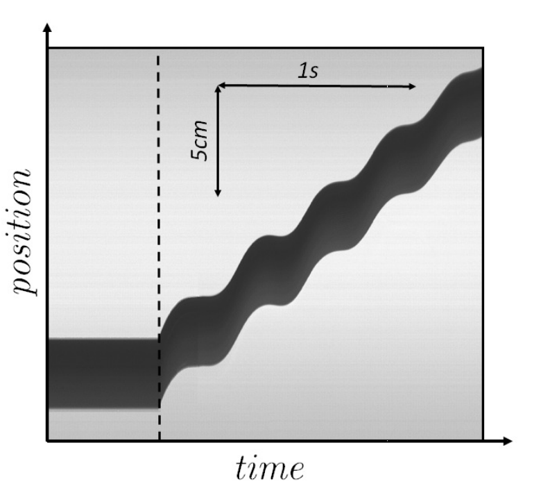
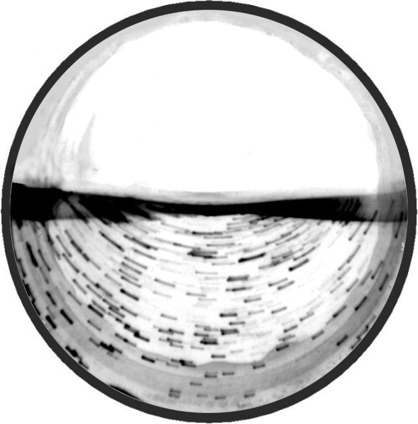
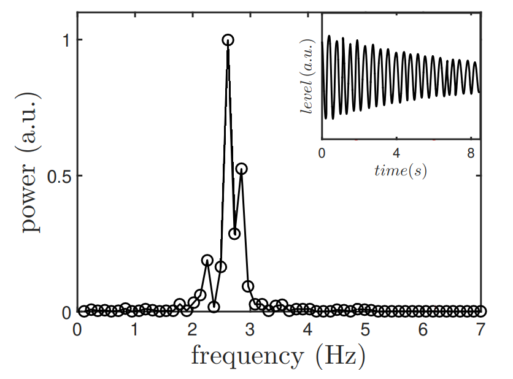
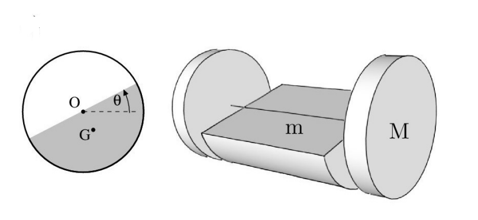
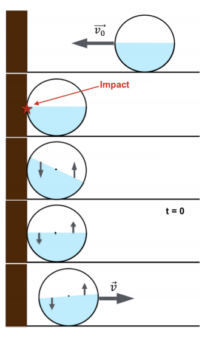

Y21 (2021) — English translation
When we push a half-empty bottle of water along a plane, vibrations of the liquid inside it cause a sharp jerking movement of the system. In this task we will study this process and build a theory to explain this phenomenon. To get you started, let's look at the results of an experiment in which we push a bottle of water and see how its position depends on time. In all experiments during the task, the same bottle will be used, so its parameters data in one part can be used in another.

First of all, let's look at how water flops around inside a cylindrical vessel. For experimental study, let's fix a bottle of radius $R=5.0~\text{см}$ on a horizontal axis and, by means of small translational oscillations of the axis, create oscillations in the water level, and then wait until the system moves into some fairly stable stationary state of liquid oscillations inside the vessel. To measure the speed of liquid flow, we fill it with polystyrene balls (density $1.06~\text{г}/\text{см}^3$, diameter $0.7~\text{мм}$) and photograph the stationary state of the system with a camera with a shutter speed (shutter speed is the time interval during which light hits an area of the photosensitive material or photosensitive matrix) $T_\text{e}=1/10~\text{с}$, this time is less than the half-cycle of water oscillations in the vessel.

The angular momentum of the water relative to the axis of the bottle is related to the angular velocity of rotation of the water plane $\dot{\theta}$ and the characteristics of the system through a certain dimensionless coefficient $\alpha$: \[ L_\text{w} = \alpha \cdot \pi \rho R^4 L \dot{\theta}, \] where $\rho$ is the density of water, $R$ is the radius of the bottle, $L$ is its length.
Now we will measure how the angle $\theta$ depends on time during stationary oscillations. Next, we apply the Fourier transform to the obtained dependence $\theta(t)$, i.e. we obtain the spectral characteristics of free vibrations of the liquid inside the bottle. Designate the distance from the center of mass of the half-cylinder to its axis as $a$.

In the last part, we came to the conclusion that the vibrations of water in bottles can be approximated with acceptable accuracy by the vibrations of a semi-cylindrical solid body with a moment of inertia $I_0 = \alpha \cdot \pi \rho R^4 L$ and a mass $m=\dfrac{\pi}{2} \rho R^2 L$ around its axis. Thus, a bottle of water can be represented as a system of rings of total mass $M$ and a half-cylinder coaxial with them. Moreover, the rings of mass $M$ roll without slipping along the plane, and the half-cylinder is suspended by the axis of the rings and does not interact with the plane.

The entire system can move along the horizontal axis $x$ perpendicular to the axis of rotation of the system. The parameters of our system will be a pair of variables $x$ and $\theta$, so write all equations in your answers in terms of these variables and their time derivatives, for example $\ddot{x}$.
To confirm this theory, we will conduct the following experiment. Let us progressively accelerate the system to speed $v_0$ and collide it with the wall. In our case, the mass of water is $m=2.780~\text{кг}$, $M=0.910~\text{кг}$, $L=70~\text{см}$. Since the mass of water is several times greater than the mass of the bottle, we will assume that $\eta$ of kinetic energy before the impact turns into vibrational energy, and the rest is dissipated. Below is a diagram of how this happens.
The following are the measurement results for $\dot{x}/v_0$ vs $t$.

$t,~\text{с}$ $\dot{x}/v_0$ $t,~\text{с}$ $\dot{x}/v_0$ $t,~\text{с}$ $\dot{x}/v_0$ -0.75 -0.96 0.55 0.42 1.42 0.41 -0.66 -0.98 0.58 0.26 1.47 0.23 -0.53 -0.96 0.61 0.10 1.51 0.08 -0.41 -0.96 0.63 0.03 1.55 -0.09 -0.31 -0.96 0.64 0.04 1.60 0.00 -0.19 -0.97 0.70 0.20 1.65 0.29 -0.18 -0.51 0.73 0.34 1.67 0.42 -0.14 0.00 0.76 0.47 1.71 0.45 -0.08 0.01 0.78 0.52 1.74 0.38 -0.02 0.01 0.83 0.50 1.79 0.14 0.04 0.07 0.90 0.25 1.84 0.00 0.07 0.19 0.92 0.04 1.86 -0.03 0.08 0.31 0.95 -0.07 1.92 0.07 0.13 0.44 0.96 -0.05 1.93 0.22 0.17 0.57 1.02 0.13 1.96 0.37 0.23 0.47 1.05 0.26 2.03 0.52 0.26 0.34 1.07 0.41 2.06 0.43 0.28 0.18 1.10 0.41 2.08 0.30 0.31 0.08 1.16 0.22 2.15 0.06 0.33 0.05 1.21 -0.04 2.18 0.02 0.36 0.13 1.24 -0.12 2.18 0.21 0.39 0.33 1.31 0.09 2.18 0.03 0.43 0.50 1.34 0.26 2.27 0.36 0.49 0.59 1.37 0.37 2.31 0.51 0.50 0.57 1.40 0.41 — —
Source: https://pho.rs/p/238